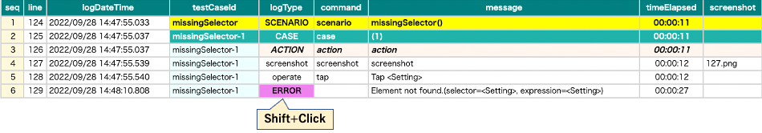

Watching sourceXML in file
Example
Debugging1.kt
(kotlin/tutorial/inaction/Debugging1.kt)
@Test
@Order(10)
fun missingSelector_ERROR() {
scenario {
case(1) {
action {
it.tap("Setting")
}
}
}
}
Console log
[ERROR] () shirates.core.exception.TestDriverException: Element not found.(selector=<Setting>)
Investigation
- Open HTML report in TestResults directory.
Shift + click on the line you want to get XML information.

Search keywords.

Cause and solution
Text attribute value that matches “Setting” is not found, but “Settings” found.
Rewrite it.tap("Setting") to it.tap("Settings").